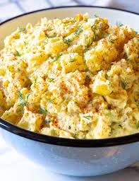

Potato Salad

Description
The best potato salad recipe
Ingredients
- 6 medium potatoes
- 1 small onion, finely chopped
- 1 cup celery, chopped
- 1 teaspoon salt
- 6 hard-cooked eggs, diced
- 2 eggs, beaten
- half a cup of white sugar
- 1 teaspoon cornstarch
- salt to taste
- half a cup of vinegar
- 1 (5 ounce) can evaporated milk
- 1 teaspoon prepared yellow mustard
- ¼ cup butter
- 1 cup mayonnaise
Steps
- Place the potatoes into a large pot, and fill with enough water to cover. Bring to a boil, and cook for about 20 minutes, or until easily pierced with a fork. Drain. Cool, peel and dice. Transfer to a large bowl, and toss with the onion, celery, 1 teaspoon of salt, and hard-cooked eggs.
- While the potatoes are cooking, whisk together 2 eggs, sugar, cornstarch, and salt in a saucepan. Stir in the vinegar, milk, and mustard. Cook over medium heat, stirring frequently, until thickened, about 10 minutes. Remove from heat, and stir in the butter. Refrigerate until cool, then stir in the mayonnaise.
- Stir the dressing into the bowl of potato salad gently until evenly coated. Chill several hours or overnight before serving for best flavor.